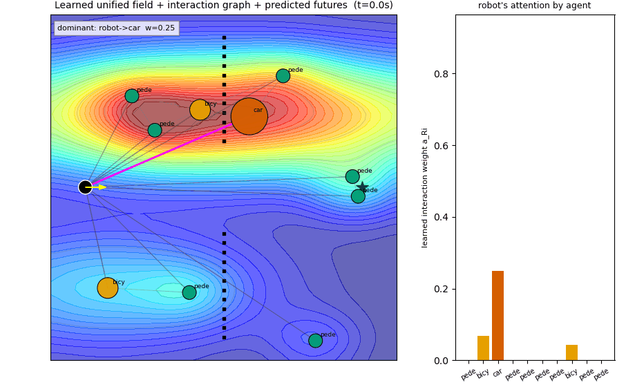
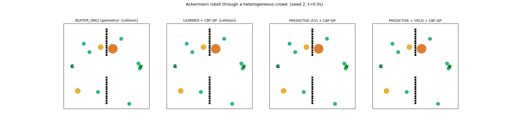

Indoor navigation
ROS 2 · indoor · 0:55Local navigation among fixed furnishings, standing people and moving pedestrians. The paired ROS view shows the observed geometry and tracked agents as the robot adjusts its path.
Mapless navigation · heterogeneous road users · conflict potentials
Precedence-Aware Conflict Potentials with Decision Commitment
for Mapless Navigation among Heterogeneous Road Users
A sparse precedence graph estimates who passes each conflict first. A conflict potential with temporal commitment then sets the ego's speed behind an unchanged safety filter, reducing the hard braking imposed on pedestrians, cyclists and drivers.
Moving among pedestrians, cyclists and vehicles without a map is a sequence of small negotiations over who passes each conflict point first. PRECEDE makes that negotiation the object of the model.
1 · Graph
Precedence is a relation between two road users at one conflict point, and it is not symmetric: in 2,432 recorded crossings, a vehicle passing first makes the vulnerable road user brake hard in 14.0% of conflicts, the reverse in 1.0%. A sparse graph keeps one edge for each road user whose path crosses the ego's route and estimates on it the probability that the ego passes first.
2 · Field
Each edge becomes a conflict potential over the ego's candidate speeds: high where precedence is uncertain, where going first would make the other road user brake, and where yielding would make the ego brake hard. Summed along the reference path, the edges form one field, and the planner picks the speed that descends it, without an HD map.
3 · Commitment
Commitment terms keep the ego on the precedence decision it has made instead of hesitating between yielding and going; in the ablations they matter most. An unchanged barrier filter keeps collision avoidance separate from the social model.
CARLA statistics are paired by instance with Holm-corrected Wilcoxon tests; a forced hard brake is braking at least twice a road user's own class reference, caused by the ego, and not after the ego has passed. Compared methods, citations and full results are in the paper.
Closed-loop CARLA
Pose replays of logged episodes: a top-down render with the interaction graph and the conflict potential, the front camera, a chase camera and the roof LiDAR.
Method
Interaction risk depends on who approaches, in which direction and along which future path. PRECEDE represents these distinctions through ordered receiver/source classes and body-aligned anisotropy. Its gradient supplies pairwise social cues and directed edge salience; future positions supply an anticipatory cue. Coordinate-frame choices and forecast backends are declared with each experimental configuration.
Road execution projects interaction cues onto the assigned route and regulates target speed within that route. A CBF-QP filters the shaped reference before tracking.

Controlled evaluation
Planar simulation separates passing geometry, anticipation and wait/recommit control under known agent states.
One method family, two forecast configurations: PRECEDE (linear forecast) uses constant-velocity extrapolation; PRECEDE (graph forecast) uses the learned interaction graph. The primary planar suite uses linear forecasts. CARLA's source-body experiments use the learned graph predictor.
The planar test below isolates the wait/recommit execution in a constrained passage; the complete planar comparison is reported in the paper.
| Controller | Episodes with contact | Reported outcome |
|---|---|---|
| Safe-VF | 30 / 30 | Contact in every trial |
| Geo+S+QP | 30 / 30 | Contact in every trial |
| AttnGraph-style adapter | 30 / 30 | Contact in every trial |
| HEIGHT-style adapter | 0 / 30 | One timeout |
| PRECEDE (linear forecast) | 0 / 30 | 30 contact-free completions |
The ranking changes in the bottleneck. PRECEDE's wait/recommit stack completes all 30 trials, with a median 7.86 s below the deadlock-speed threshold before passing. This result identifies the constrained geometry where its execution strategy helps.


The planar tests isolate mechanism and topology. CARLA evaluates the field-and-control framework with learned graph forecasts, sensor-gated tracks, responsive road users and physical tracking. The ROS 2 deployment on a wheeled platform connects the same fields to onboard sensing and base commands.
Mapless CARLA evaluation
The ego receives a reference path and its own perception; no HD map or prior static map is provided. Road users include pedestrians, cyclists, cars, vans, trucks and buses, and each responds to the ego through a yield-or-go decision with class-specific deceleration. Road users also give way to one another: at a crossing the later arrival yields, pedestrians step aside to pass, and parked cars and vans pull out only into a sufficient gap, following the narrow-road cases of a SOTIF test catalogue. The primary endpoint is the number of road users the ego forces to brake hard, at least twice their class reference deceleration and before the ego has passed.
Each parallel comparison shows the top-down replays of CBF-QP, BehaviorAgent†, APF and PRECEDE on one clock. Edges connect the ego to road users whose paths cross its corridor ahead (red: the ego is expected to pass first); rings mark road users forced to brake hard. APF is drawn with its Gaussian potential field and PRECEDE with its conflict potential along the route. Thin rings give the road-user class (yellow-orange: pedestrian, light blue: cyclist, green: car, dark orange: van, truck or bus).
Narrow street parked at both kerbs
Parked vehicles leave 0.6–1.0 m beside the ego; pedestrians step out between them. Road users: 12 pedestrians, 2 cyclists.
Vehicles pulling out from parked positions
A car and a van parked at the kerb move off only into a sufficient gap: here they wait until the ego has passed and then pull out behind it, while pedestrians cross ahead. Road users: 4 pedestrians, 1 car, 1 van.
Main road with a shared space
Pedestrians and cyclists cross the ego's path from both sides. Road users: 15 pedestrians, 9 cyclists.
PRECEDE forces 0.45 hard brakes per episode on main roads and 0.39 on narrow streets, the fewest of all methods; every paired difference against a baseline is significant (Wilcoxon, Holm p ≤ 2.5 × 10-8). It records no collisions and keeps 99.4–99.6% completion. Baselines lead elsewhere: some are faster, and PDM-Lite† has fewer near misses on narrow streets. Bold marks the best value in each column, whichever method it belongs to; † marks an adapted re-implementation of the cited method (methods and citations are listed in the paper).
| Method | Main roads (330 scenes) | Narrow streets (268 scenes) | ||||||||
|---|---|---|---|---|---|---|---|---|---|---|
| Forced hard brakes / ep. ↓ | Collision % ↓ | Near miss % ↓ | Completion % ↑ | Median time (s) ↓ | Forced hard brakes / ep. ↓ | Collision % ↓ | Near miss % ↓ | Completion % ↑ | Median time (s) ↓ | |
| CBF-QP | 1.12 | 0.9 | 28.2 | 97.6 | 22.6 | 1.47 | 0.4 | 31.3 | 99.3 | 31.7 |
| BasicAgent† | 1.06 | 0.6 | 27.6 | 98.5 | 23.5 | 1.40 | 0.7 | 31.0 | 98.9 | 31.7 |
| BehaviorAgent† | 1.04 | 0.6 | 25.5 | 98.5 | 25.9 | 1.16 | 1.1 | 19.8 | 98.5 | 35.2 |
| PDM-Lite† | 0.85 | 0.6 | 14.2 | 91.8 | 35.9 | 0.68 | 0.0 | 6.3 | 99.3 | 38.3 |
| APF | 1.15 | 0.3 | 29.1 | 99.1 | 22.4 | 1.24 | 0.7 | 26.5 | 98.9 | 32.3 |
| ORCA† | 1.22 | 0.6 | 47.9 | 99.1 | 33.8 | 1.06 | 0.4 | 45.5 | 98.5 | 41.3 |
| SFM† | 1.06 | 0.9 | 25.8 | 98.2 | 22.7 | 1.32 | 0.4 | 27.6 | 99.3 | 31.8 |
| CVM-PtP | 0.97 | 0.6 | 20.0 | 99.4 | 23.4 | 1.00 | 0.7 | 17.5 | 99.3 | 33.4 |
| Courteous† | 0.94 | 1.5 | 23.9 | 97.0 | 25.9 | 0.99 | 0.7 | 14.2 | 99.3 | 34.0 |
| OA-RF† | 0.91 | 0.3 | 20.9 | 96.1 | 30.5 | 0.88 | 0.4 | 20.1 | 98.1 | 35.5 |
| DREAM† | 0.85 | 0.6 | 20.6 | 97.9 | 29.6 | 0.85 | 0.0 | 16.4 | 99.6 | 33.9 |
| PRECEDE (ours) | 0.45 | 0.0 | 13.6 | 99.4 | 26.0 | 0.39 | 0.0 | 7.8 | 99.6 | 34.3 |
With onboard camera and LiDAR on main roads, PRECEDE again forces the fewest hard brakes (0.68 per episode); the difference is significant against CBF-QP, BehaviorAgent†, ORCA†, CVM-PtP and DREAM†.
| Method | Main roads (90 scenes) | ||||
|---|---|---|---|---|---|
| Forced hard brakes / ep. ↓ | Collision % ↓ | Near miss % ↓ | Completion % ↑ | Median time (s) ↓ | |
| CBF-QP | 1.31 | 1.1 | 33.3 | 98.9 | 26.2 |
| BehaviorAgent† | 1.20 | 0.0 | 23.3 | 100.0 | 27.3 |
| PDM-Lite† | 1.04 | 2.2 | 24.4 | 97.8 | 32.3 |
| ORCA† | 1.26 | 4.4 | 26.7 | 94.4 | 27.4 |
| CVM-PtP | 1.08 | 0.0 | 25.6 | 100.0 | 23.9 |
| OA-RF† | 0.92 | 2.2 | 24.4 | 96.7 | 27.7 |
| DREAM† | 0.97 | 1.1 | 22.2 | 98.9 | 27.1 |
| PRECEDE (ours) | 0.68 | 1.1 | 15.6 | 98.9 | 26.2 |
| PRECEDE variant | Main roads | Narrow streets |
|---|---|---|
| w/o commitment (total-variation and decrease terms) | +0.12** | +0.40*** |
| w/o precedence uncertainty (entropy term) | +0.06 | +0.13** |
| w/o imposed discomfort | +0.02 | +0.04 |
Positive values: the variant forces more hard brakes than PRECEDE, i.e. the removed term helps; * Holm p < 0.05, ** < 0.01, *** < 0.001. Camera and LiDAR runs on narrow streets and the safety-critical events, where PRECEDE has no significant advantage, are reported in the paper with all other results.
Inside the decision
One recorded episode on a narrow Town02 street with ground-truth perception. The front camera shows the conflict potential PRECEDE assigns to the road ahead, the stopping reach of each candidate speed it scores and the road users in its precedence graph; the timeline links the planner's output to the command after the safety filter.
Hover over (or tap) the road to query the field at that point, which is mirrored on the bird's-eye view; over a road user for its precedence probability and arrival gap; or over a curve on the right to find that candidate speed on the road.
The planner's internals are replayed from the logged episode and reproduce its decisions in 97% of the 320 planning steps (within 0.5 m/s). Camera boxes are the logged 3-D extents projected with the camera's pose. Open the viewer on its own page.
Built-up narrow streets
Two narrow roads with buildings, street furniture and lane markings, where vehicles from the two directions cannot pass each other everywhere. Oncoming vehicles and cyclists negotiate the narrow stretch with the ego, and pedestrians and cyclists cross in both directions; buildings, parked cars and the waiting vehicles hide them from the ego. The oncoming road users follow the usual narrow-road conduct: keep to their own side, pass a stationary vehicle through the other lane, and give way when the obstruction is on their side.
PRECEDE forces 0.50 hard brakes per episode, against PDM-Lite† 1.08, DREAM† 1.08, ORCA† 1.25 for the closest baselines; with 6 scenes per road, no paired difference survives Holm correction (smallest adjusted p = 0.055, against CBF-QP, BasicAgent† and BehaviorAgent†). No method collides. Its mean time to the goal is 35.9 s, 2.4 s more than the fastest baseline.
| Method | Curving road | Village road | Both | Collisions | Near misses | Goal time (s) |
|---|---|---|---|---|---|---|
| CBF-QP | 2.00 | 1.50 | 1.75 | 0.00 | 0.25 | 33.8 |
| BasicAgent† | 1.83 | 1.67 | 1.75 | 0.00 | 0.08 | 35.4 |
| BehaviorAgent† | 1.33 | 1.83 | 1.58 | 0.00 | 0.17 | 39.3 |
| PDM-Lite† | 1.17 | 1.00 | 1.08 | 0.00 | 0.08 | 36.9 |
| APF | 1.83 | 1.67 | 1.75 | 0.00 | 0.33 | 35.3 |
| ORCA† | 1.17 | 1.33 | 1.25 | 0.00 | 0.25 | 50.8 |
| SFM† | 1.83 | 1.50 | 1.67 | 0.00 | 0.00 | 35.9 |
| CVM-PtP | 1.17 | 1.83 | 1.50 | 0.00 | 0.25 | 36.5 |
| Courteous† | 0.83 | 1.83 | 1.33 | 0.00 | 0.00 | 36.4 |
| OA-RF† | 1.00 | 1.67 | 1.33 | 0.00 | 0.33 | 33.9 |
| DREAM† | 1.17 | 1.00 | 1.08 | 0.00 | 0.33 | 33.5 |
| PRECEDE | 0.50 | 0.50 | 0.50 | 0.00 | 0.00 | 35.9 |
One lane of 2.0–2.7 m that bends through about 380°, lined with parked cars. The oncoming van, car and cyclist cannot pass the ego anywhere but in the one passing place, so they queue into it and wait there until the ego has gone by; pedestrians and cyclists step out from between the parked cars and the buildings, from both sides.
Two 3.5 m lanes. A van loading at the oncoming kerb, with cars parked behind it, closes the oncoming lane, so the oncoming lorry and car must pass it through the ego's lane. Keeping to the rule that the side with the obstruction gives way, they wait in their own lane short of the van while the ego is near, and a cyclist rides past it inside its lane; pedestrians cross both lanes, also from behind the van.
Safety-critical events in closed loop
Six families of hazards adapted from SOTIF logical test cases start at a set time-to-arrival of the ego, among pedestrians and cyclists who give way to one another. Each hazard reacts once it sees the ego: it may brake, steer away, stop, step back or turn back. Vans, trucks and buses hide road users from the ego's line of sight.
104 scenes, all 15 methods, ground truth with occlusion. PRECEDE completes every scene without a collision. One representative family is shown below; per-family results for all methods are in the paper.
Town02 parked at both kerbs, 5 road users (3 pedestrians, 2 cyclists).
Results
The planar tests isolate passing geometry and bottleneck execution. The CARLA comparisons examine contact, body spacing, motion and surrounding traffic response under sensing feedback.
| Controller | Goal / contacts | Min. truck SAT (m) | Raw jerk RMS (m/s³) | Command p95 (ms) |
|---|---|---|---|---|
| APF + common QP | No / 1 | −0.30 | 21.26 | 24.10 |
| Shared-class | Yes / 0 | 0.25 | 26.42 | 23.46 |
| No field | Yes / 0 | 0.40 | 20.97 | 25.76 |
| PRECEDE | Yes / 0 | 0.40 | 19.47 | 24.68 |
In the paired crossing replay, APF records truck contact and PRECEDE reaches its goal. PRECEDE has a larger truck body-support margin and lower recorded jerk than Shared-class in this episode; No field also finishes with a similar truck margin. Body margins use the fixed 60 s state capture. Raw jerk includes launch and stopping over unequal active-command durations, with APF commands ending at contact. Command timing excludes upstream sensing/simulation; PRECEDE records 5/813 calls above 50 ms.
| Controller | Contact-free goals / 8 | Median support margin (m) | Proximity exposure (s) | Smoothed jerk RMS (m/s³) | Median episode p95 (ms) |
|---|---|---|---|---|---|
| ORCA + common QP | 8 / 8 | 0.430 | 11.29 | 11.59 | 4.35 |
| SFM + common QP | 8 / 8 | 0.517 | 3.94 | 6.95 | 3.75 |
| Reactive stack | 6 / 8 | 0.533 | 9.13 | 6.31 | 3.89 |
| Class-label collapse | 8 / 8 | 0.884 | 3.08 | 11.61 | 17.99 |
| PRECEDE | 8 / 8 | 1.525 | 1.17 | 14.09 | 18.00 |
Town10HD and Town05, two actor loads and two traffic evolutions, retrospectively assembled from separately frozen cohorts without outcome-based filtering. This configuration uses oracle states, green-frozen signals and a learned forecast adapter. PRECEDE has larger support margins and lower proximity exposure than ORCA and SFM in all eight matched cases, with higher measured jerk and computation. Runtime includes prediction where used, cache, planning/QP and tracking; PRECEDE records 1/6224 calls above 50 ms, maximum 56.42 ms. All 40 navigation traces are complete; 16 abnormal cleanup/process exits remain documented. Protocol, definitions and reported values.
Real-world deployment
The controller runs on a small differential-drive wheeled robot under ROS 2, indoors and outdoors among people, with onboard sensing and without a prior map.

Odometry, laser-scan geometry and tracked pedestrians in the robot's local frame feed the planar form of the controller: the interaction field with optional linear forecasts, a speed governor, and a QP with soft constraints for moving people and hard constraints for static obstacles, which outputs bounded velocity commands for the differential drive.
Local navigation among fixed furnishings, standing people and moving pedestrians. The paired ROS view shows the observed geometry and tracked agents as the robot adjusts its path.
The robot progresses along a shared walkway while pedestrians approach and pass. The physical and ROS views document feedback-driven motion through the changing local scene.